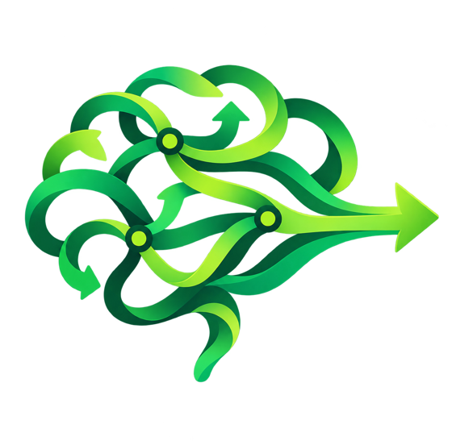
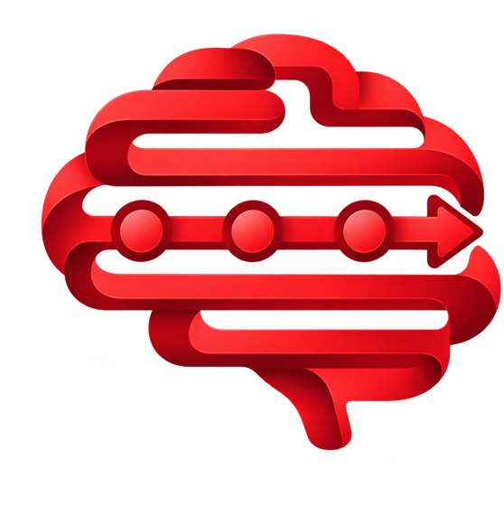
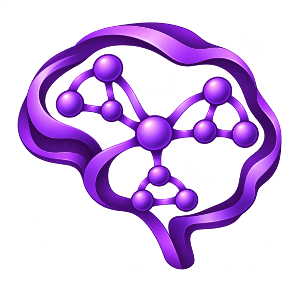
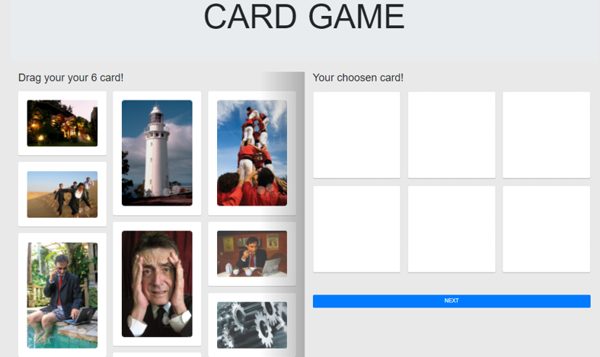
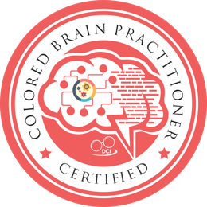
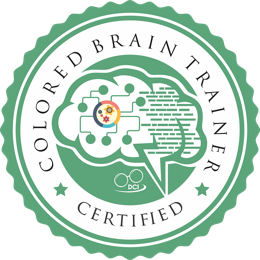
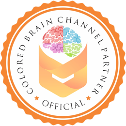

of coach practitioners expect growth to come from more clients, not higher fees. That's pricing pressure in a nicer outfit.
ICF Global Coaching Study, 2025
For coaches, trainers & consultants
Every other assessment profiles a person. Colored Brain reads the team.
Your client isn't the same person in every group. In one team they're unstoppable; in another, the opposite. A personality profile can't see that. The CBCI measures how each person gets clarity in reference to the people they actually work with: who is in whose danger zone, which process the team is missing, what will probably happen when this group meets. That's the tool for team performance, and with Predictive Psychology AI it keeps coaching between your sessions.
Situation Simulator
Illustrative example
The market you're selling into
Generic coaching just got a very cheap competitor.
AI apps now advertise themselves as 30x cheaper than a coach. HR wants proof, not vibes. And your clients want letters after your name. So what exactly are they paying you for?
say clients increasingly expect credentials. "Trust me, I've done this for years" is no longer a sales strategy.
ICF Global Coaching Study, 2025of leaders report healthy change adoption. HR isn't short of workshops. It's short of people who actually get it the same way.
Gartner CHRO Priorities, 2026The way out isn't louder marketing. It's selling the one thing DiSC, Insights and Hogan can't: a read on the team, not the person.
The Directive Communication premise
We are different people in different groups.
DC Psychology starts from one observation: behavior, attitude and passion change with the group you're in. So the useful question is never "what type is this person?" It's "what happens when this person and these people try to get clear together?" Individual profiles can't answer that. Colored Brain was built to.
Person to person
Danger zones
Each result includes a miscommunication profile. Put two people side by side and you see who will misread whom, before it costs a project. Your client's Green isn't a problem until it meets a Purple under deadline.
- Who is in your danger zone, and whose you're in
- What might happen, why, what to do, what to say
Only Colored Brain does this
Person to team
Process coverage
The team dashboard shows which clarity processes the group has and which it lacks. A team with no Blue explains the change clearly and then wonders why nobody bought in. A team with no Red ships fast and fixes it twice.
- The gap, and what it does to decisions and handoffs
- Who to add, who to pair, who to protect
Team in a situation
What will probably happen
Describe the real situation and pick the people involved. Predictive Psychology AI uses everyone's actual results to show the likely dynamics, where it goes wrong, and what each person needs to hear.
- Rehearse the change announcement before it happens
- Build the project team on process, not politics
This is why the debrief is a team event, and why certified practitioners sell programs, not reports.
What the CBCI measures
Four ways a brain gets clear enough to act.
Most "communication problems" are clarity problems. Everyone heard the same briefing. Four brains needed four different things from it. The CBCI shows who needed what, and where the friction will start. A result on its own is interesting. Next to a teammate's result, it's useful.

Acts to understand
Starts with the big picture, tests ideas, adapts as new information lands.
Give them room to try it. Lock the steps too early and they tune out.

Structures to understand
Needs tangible logic, sequence and consistency. Spots the discrepancy first.
Show step one, two, three. Change the plan without warning and trust drops.

Connects the details
Gathers context, links information, weighs the options and implications.
Send the detail before the meeting. A 5pm decision deadline feels like an ambush.
Blue · Intuitive processing
Senses the human meaning
Reads tone, relationships and what the situation means to the people in it.
Say why it matters to people. Skip that and the "logical" plan feels cold.
Predictive Psychology AI
Predictive Psychology: an AI that knows the difference between your clients.
ChatGPT gives everyone the same advice. This one reads each person's actual CBCI result, adds their assessed motivators when available, then works through the real situation in front of them.
How · Colored Brain
The clarity pattern
Four-color scores, intensity and miscommunication risk from a completed CBCI.
Why · Emotional Drives
The motivators
All 8 motivators ranked in a 60 second snapshot, or the full Emotional Drives assessment with a certified trainer. Never guessed from brain color.
When · Context
The situation
Role, pressure, goal and who's in the room. The AI turns it into likely reactions and what to say.
No data, no guessing. If a layer is missing, it says so and lowers its confidence.
Coach me
Personal AI coaching
Most likely pattern, where it could go wrong, what to do, with a confidence rating.
Ask AI Insights · Custom AI Chat · Monthly SummaryWork with someone
Pair intelligence
Prep the hard conversation. See where two clarity processes will clash before they do.
Compare Teammate · Leadership Guide · Manager FitLead a team
Team dynamics
Map the team, test a new mix, rehearse a real situation before it happens.
Team Dashboard · Team Builder · Situation SimulatorSee the organization
Org view
Communication patterns across departments, and where support is needed next.
Org Dashboard · Dept Comparison · Org Reports
AI handles the in-between. You handle the breakthroughs.
Clients keep practising with your method between sessions, so they keep coming back to the person who taught it to them.
How your clients take it
Send them one link. We handle the rest.
Your clients never see this page. Send them to coloredbrain.com with their code. The site is written for them: leaders, HR and teams, in plain language, in 8 languages.
- You
Buy codes
Packs from 10 to 100. Certified Trainers buy at 70% off retail.
- You
Send the code
Email, WhatsApp, or a slide at the start of your workshop.
- Client
Takes the test
About 15 minutes at coloredbrain.com. Results appear in their account and yours.
- You
Debrief and upsell
Run the debrief, then add AI team seats or one-seat client codes so the coaching continues between sessions.

Your marketing, run by AI
You run the room. The Growth AI fills it.
Every certified trainer gets a Growth section inside the Agents of Change portal. Tell it your Business DNA once (who you serve, which market, what your practice is trying to achieve) and it watches your real activity: codes left, live assessment events, people you have already reached. Then it tells you what to do next and builds the campaign for you.
- Reads what is already there. Your first recommendations come from data already in the portal, not from a blank prompt.
- Builds the campaign. Attention pieces, follow-ups and case-study angles written around Colored Brain, your clients and your voice.
- Turns one test into a long client. A seven-step path from first attention to long-term account, with the next move always visible.
- Manages your website too. Your own Colored Brain site and white-label branding, managed from the same dashboard.
Your DC Growth Path
Turn one entry point into a longer client relationship.
- 1Attention
- 2Colored Brain
- 3Diagnosis
- 4Training / Coaching
- 5Culture
- 6Squadli
- 7Long-term Client
Available CBCI48of 100 codes
Active events5assessment opportunities
People reached132existing relationships
Illustration of the Growth section in the Agents of Change trainer portal. Your numbers will be your own.
Start small. Go as far as you like.
Try it on yourself first. Then on everyone else.
Nobody should buy a certification for a tool they haven't felt. So step one costs less than lunch in Singapore.
Step 1 · Discover
Take your own CBCI
$40.52 one assessment
Your full four-color result, intensity and miscommunication profile. The "oh, so that's why that meeting went sideways" moment.
Get my result
Step 2 · Use it with clients
Codes + AI for your people
$49.50 /mo AI for 10 people
Run the CBCI with a client team (10 codes for $382), then switch on the AI so the whole team gets coaching, pair guidance and the Situation Simulator.
See AI plans
Step 3 · Own the method
Get certified
from $880 one time
Debrief with authority, run official workshops, buy codes at 70% off retail and resell at your margin.
Compare certificationsColored Brain Certification
Own Predictive Psychology. Then let the AI run it for you.
Certified practitioners don't just hand out a report. They read the pattern, run the room, and sell the follow-up. Pick the level that matches how far you want to take it.

For coaches & consultantsColored Brain Practitioner
$880 one time
Use Colored Brain in your own work with clients and teams.
- Self-paced online plus weekly live sessions
- 1,000 Predictive Psychology AI credits included
- Growth AI in the Agents of Change portal: it plans and writes your Colored Brain marketing
- Your own CBCI plus an extra code for practice
- All 4 Ambiguity Relief Processes, in depth
- "Profile Anyone in 7 Minutes" framework
- Templates for 1-to-1 and small team debriefs
- Worksheets and coaching tools
- Digital certificate and Practitioner listing
Best for trainers & HR

For trainers & in-house L&DCertified Colored Brain Trainer
$1,880 one time
Deliver full programs and corporate workshops, or build your own in-house trainers.
- Everything in Practitioner, including weekly live sessions and 1,000 AI credits
- Facilitator manual and slide decks: half-day, 1-day, 2-day
- Rights to run official Colored Brain workshops
- Global license to train and promote Colored Brain tools
- Wholesale pricing at 70% off retail
- Team mapping, CBC card activities and simulations
- Trainer dashboard, community, and DCI project eligibility

For firms building a businessColored Brain Channel Partner
$3,880 per year
Build a scalable Colored Brain business in your region or niche.
- Official Channel Partner status, weekly live sessions and 1,000 AI credits
- Your own back-end to sell CBCI codes at your margin
- Rights to train and certify Practitioners
- Preferential bulk rates on CBCI and tools
- Co-branded assets, funnels, webinar frameworks
- Launch support and annual strategy sessions with DCI
Every level: self-paced online modules plus weekly live sessions. Each certification includes 1,000 Predictive Psychology AI credits.
Side by side
What each level lets you do.
| You can… | Practitioner | Trainer | Channel Partner |
|---|---|---|---|
| Debrief clients and small teams | Yes | Yes | Yes |
| Run official Colored Brain workshops | No | Yes | Yes |
| Buy CBCI codes at wholesale | No | 70% off retail | Preferential bulk rates |
| Sell codes from your own site | No | No | Yes, your margin |
| Train and certify Practitioners | No | No | Yes |
| Sub-contract Certified Trainers | No | No | Yes |
| Investment | $880 once | $1,880 once | $3,880 / year |
Payback math · Trainer level
How many participants until it pays for itself?
Move the sliders to match your practice. We use the published retail code price and the Trainer tier's 70% wholesale discount. Your market sets the rest.
Retail code: $40.52. Trainer wholesale: $12.16 (70% off). Excludes your time, workshop fees and AI seats.
Certification pays back after
13 participants
Gross margin per participant$137.84
Saved on codes vs retail, per year$1,701.60
Gross margin per year$8,270.40
Illustrative arithmetic, not a promise of income.
Certification FAQ
The fine print, in plain English.
Which level should I start with?
Coaching individuals or small teams: Practitioner. Running workshops or building in-house trainers: Trainer. Building a business that sells CBCI and certifies others: Channel Partner.
How is the certification delivered?
Self-paced online modules you work through at your own speed, plus weekly live sessions with the DCI team. Every level includes 1,000 Predictive Psychology AI credits so you can use the AI with real clients from day one.
Is the certification accredited?
Colored Brain is an accredited methodology of the American Institute of Business Psychology. [confirm final accreditation wording]
Can I upgrade later?
[confirm upgrade policy and credit for earlier level]
Do I need to have taken the CBCI first?
Every level includes your own CBCI. If you've already taken it, your existing result carries over.
Built by Arthur Carmazzi
Two decades in the field before it met an algorithm.
Arthur founded Directive Communication Psychology in 2003 and developed the Colored Brain framework from culture change work inside real organizations. The AI came later. The method came first.
991licensed practitioners
28countries
#1Organizational Culture, Global Gurus
16books by Arthur
"The brain color exercise (CBCI™) was excellent for really understanding our communication."
Charles de Foucault, General Manager, The Ritz-Carlton, Seoul
Published research on Colored Brain
- Chin, Ooi & Yip (2016), International Journal of Information and Education Technology
- Milad (2018), IAFOR, Brain Colour and Multiple Intelligences
- Sittiprapaporn & Carmazzi (2019), Asian Journal of Medical Sciences
- Carmazzi (2017), International Journal of Advanced Research, Ambiguity Relief
Before you ask
Questions practitioners ask first.
Isn't this just another four-color personality test?
No. Personality and behavior tools describe what people do. The CBCI measures how a brain gets clarity, which explains why the same message lands differently with different people. Your result is a pattern across all four processes, with intensity, not one color.
How is the AI different from asking ChatGPT?
It works from each person's actual assessment results and the situation you describe. It tells you what data it used, what's missing, and how confident it is. It won't invent a motivator ranking someone hasn't completed.
Can I use it with my own clients without getting certified?
Yes. Buy CBCI codes and AI client codes and use them in your practice. Certification adds the debrief skill, workshop rights, wholesale pricing and the right to use the method commercially.
What languages is the CBCI available in?
English, Malay, Russian, Indonesian, Chinese, Arabic, Hindi and Sinhala. 20 questions in three sections, about 15 minutes.
What happens to a client's result if their AI access ends?
Their completed CBCI result stays on their account. AI access, assessment codes and completed results are separate things, so ending one doesn't erase the others.
Who can see my clients' data?
Pair and team insights only use results where team membership and sharing permissions allow it. If someone hasn't shared, the AI tells you it can't use their data.
Stop explaining the method. Start owning it.
Arthur and the DCI team personally support and mentor certified consultants.